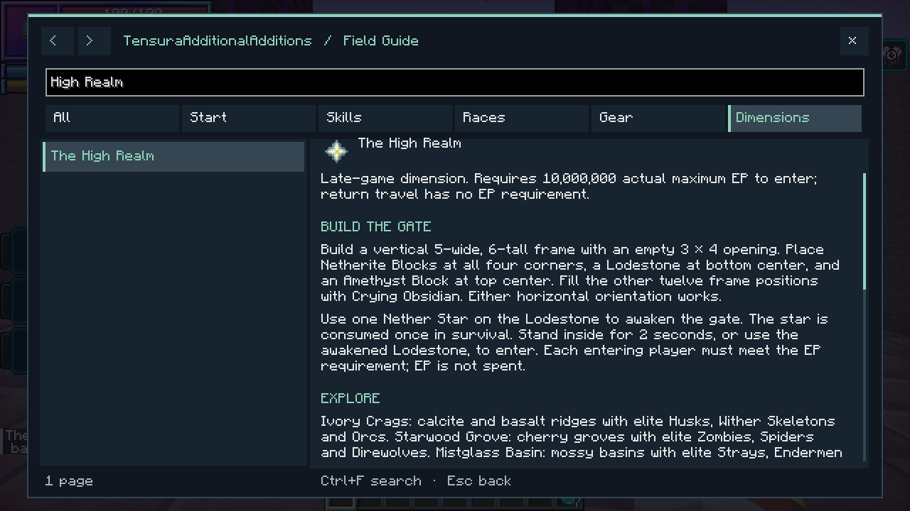

A late-game dimension of pale ridges, cherry groves and misty basins. 10,000,000 actual maximum EP is required to enter. EP is checked, not spent. Supports single-player and multiplayer.
On this page

Gate
Build a vertical 5 × 6 frame in either direction. Its 3 × 4 opening must be empty, without fluids.
N C A C N
C . . . C
C . . . C
C . . . C
C . . . C
N C L C N
| Symbol | Material | Count |
|---|---|---|
| N | Netherite Block | 4 |
| C | Crying Obsidian | 12 |
| A | Amethyst Block | 1 |
| L | Lodestone | 1 |
| . | Empty opening | — |
Use one Nether Star on the Lodestone to awaken the gate. In survival, the star is consumed once. Stand inside the awakened arch for 2 seconds, or use its Lodestone, to enter. Every player must meet the EP requirement. Breaking the frame disables it.

Landscape and enemies
The realm stays in twilight. Terrain uses existing Minecraft and Tensura blocks, with native magic ore, emeralds and rare diamonds in the calcite and basalt.
| Biome | Landscape | Elite inhabitants |
|---|---|---|
| Ivory Crags | Calcite mountains with dark basalt bands | Husks, Wither Skeletons, Orcs |
| Starwood Grove | Pale grass and cherry groves | Zombies, Spiders, Direwolves |
| Mistglass Basin | Mossy basins, clay and turquoise water | Strays, Endermen, Lizardmen |
Elites retain their original models and behavior. Bosses are excluded. Player-owned mobs, summons and mobs brought from elsewhere are not upgraded.
| Elite | Members | EP | HP | SHP | Native abilities |
|---|---|---|---|---|---|
| High Bulwark | Husk, Wither Skeleton, Orc | 5,000,000 | 1,024 | 5,000 | Physical Attack Resistance; Strengthen Body |
| High Sentinel | Stray, Enderman, Lizardman | 3,500,000 | 850 | 3,200 | Magic Resistance; Water Attack Resistance |
| High Stalker | Zombie, Spider, Direwolf | 2,500,000 | 700 | 2,400 | Poison Resistance; Paralysis Resistance |
These are default stat floors; native effects can alter final attributes. Elites also have stronger attacks, armor and senses. Sentinels' arrows are enhanced. Player or subordinate kills retain normal loot and EP rewards and add 1–3 Amethyst Shards, with a 20% chance of native Magic Ore and a 2% chance of Netherite Scrap. Dropped elite equipment is not an extra guaranteed reward.
Returning
The quartz return arch in the arrival sanctum is the return gate. Walk through it or use its central bedrock base. Leaving has no EP requirement. Each player returns near their own entrance; obstructed exits use nearby safe ground or the Overworld spawn.
The small arrival sanctum is protected from normal block edits. Natural hostile spawns are suppressed within 48 blocks of its center. The rest of the dimension can be mined and built in. Beds do not work here.

Saves and settings
The dimension is added to existing saves. Its terrain, awakened gates and individual return points persist after a restart. World Hop generates a fresh realm for a new seed; returning to a previously visited world restores that world's realm.
Server settings are in serverconfig/tensura-additions-high-realm.toml: entryEP, gateChargeTicks, elitePower, and eliteSpawns. Changing elite strength affects new spawns. Up to 256 awakened gates can be registered in one world.
Find this page under Dimensions in the searchable F8 guide.
